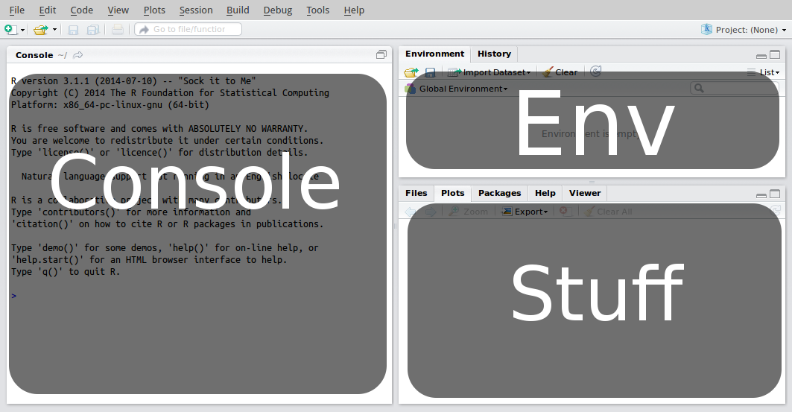
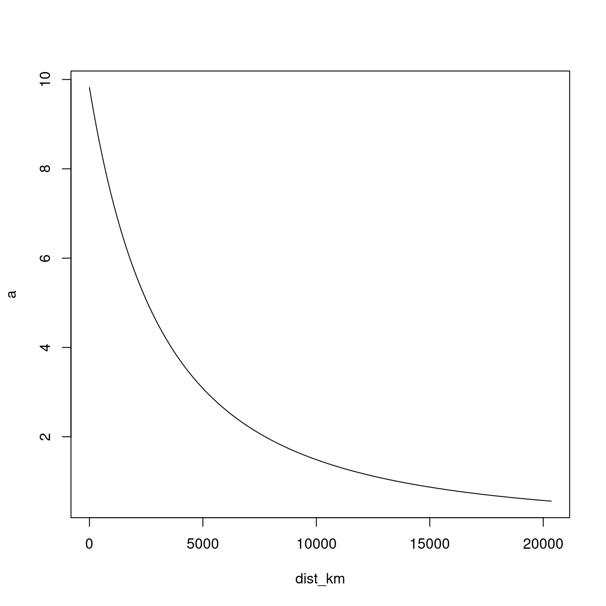
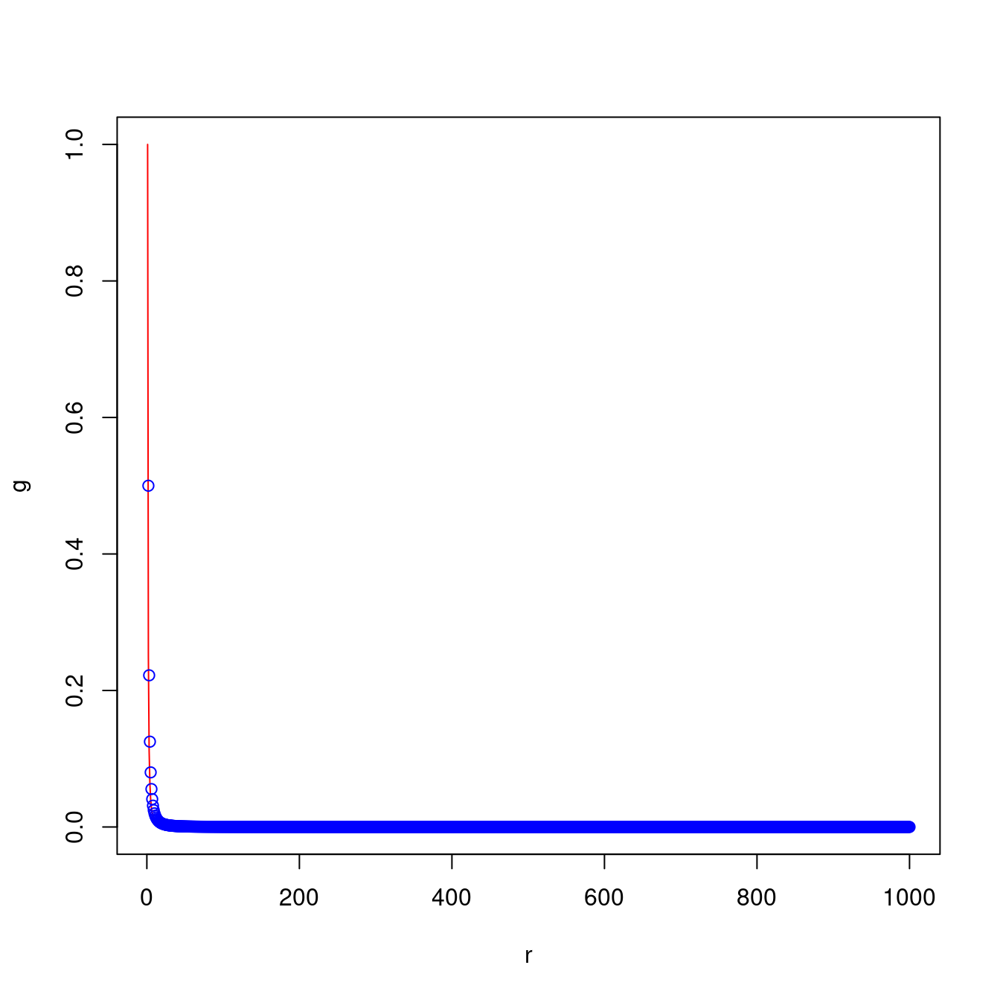
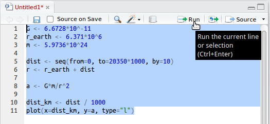

0 Introduction to R
The purpose of this lab is to provide you with a gentle introduction to R as an environment for working with and analysing data. In this lab, you will practice using some of the basic functions and operations in R, as well as how to create functions of your own.
0.1 Background
R is a free and open-source programming language for statistical computing and graphics. `Open-source’ means that the code that was written to create the R environment is available for others to use and modify from its original design. Open-source software is typically thought of as a collaborative effort where people improve upon the source code and share the changes within the community so that other members can take advantage of their work, as well as help improve it further.1
Versions of R are available for Windows, Macs and Linux. To download and install R visit the website http://www.r-project.org. You will also need RStudio (http://www.rstudio.com). If you are using one of the computers in the lab, both of these will already be installed.
One way in which someone may improve upon R is by trying to add functionality to it, like, making it possible to produce a particular graph or fit a particular kind of model.
Figure 0.1: Correlograms help us visualise correlation matrices and are implemented in the corrgram package.
Once someone has implemented a particular feature, they typically bundle it up into a package and request it to be stored on CRAN (the Comprehensive R Archive Network). This makes it incredibly easy for users to download and install other people’s packages which is something we will initially be doing a lot of.
Installing packages and using other people’s code in order to get a piece of software to do what you want might seem a bit odd at first. But, actually, this modular nature is common in lots of software; Excel has its add-ins, SAS has extra procedures which are bundled into products, and SPSS has modules. An entire open-source operating system, Linux, has been built using this modular approach, again developed by a passionate community.2
0.2 Saving your work
If you are using a university computer or are remotely connected to your virtual machine, start by finding your home folder (your H: drive). This H: drive will be made accessible to you no matter which university computer you use. Access it via Start button > Computer. This is the best location to save all your files (reports, scripts, plots, data sets, and everything else).
If using a university computer, do NOT save files to the local (C:) drive as they will probably not be there when you next login.
Also, ISS makes backups of your H: drive (I think they do this every night), so if you ever permanently delete a file, they should be able to recover a previous version of it.
0.3 Getting started
Start by opening R Studio. R Studio tries to makes best use of the screen by splitting it up in to three panels:

- An interactive R console – enter R commands manually at the prompt at the bottom (look for the
>symbol). - Environment – as you progress through the lab materials, the objects you create will show up here which will include things like data sets, plots, and models.
- Stuff – a miscellaneous panel that has various uses, as you will see later. For now, click on the Plot tab. The panel should become blank (since we have not made any plots yet).
0.3.1 Using R as an overgrown calculator
Everything you do in this section will be using the console panel.
Start by entering one of the simplest possible commands you can do in R;
addition of two numbers. Type the following and press Enter.
## [1] 9The result is automatically printed back to the user. R can do all the basic maths
operations. The [1] refers to 9 being the first part of out answer. In this case, 9 is the first and only part to our answer. You will come across answers later which have many parts, and so R prints these numbers in square brackets to help.
| Operation | Example |
|---|---|
| Add | 2 + 3 |
| Subtract | 2 - 3 |
| Multiply | 2*3 |
| Divide | 2/3 |
| Modulus | 2 %% 3 |
| Square root | sqrt(2) |
| Power | 2^3 |
| Cosine | cos(2*pi) |
| Sine | sin(pi/2) |
| Tangent | tan(pi/4) |
| Natural log | log(2) |
| Expontential | exp(2) |
Using numbers of your own, try the other basic mathematical operations listed below
Once you’re happy, try stringing some of these calculations all into one command, for example:
## [1] 12.66667## [1] 50The multiplication and division calculations are performed first (* and /), followed by addition and subtraction (+ and -), going from left to right.3
This can be overridden by using putting the calculations we want to perform first in brackets. A more complex calculation is: \[ \frac{\sqrt{3/4}}{\frac{1}{3} - \frac{2}{\pi^2}}. \]
## [1] 6.626513This next step is when R stops behaving just like a calculator and starts
becoming more useful. We can store the results of our calculations in an object
using the assignment operator, <- (a less-than symbol followed by a hyphen).
We just need to think of useful names for our objects:
## [1] -5If you look in the environment panel of RStudio, you should now see two objects listed. These objects are now part of our working environment. We can access their contents by typing entering their names into the console:
## [1] 4## [1] 9When creating objects, remember R is case-sensitive so apple is different
from Apple:
## Error in eval(expr, envir, enclos): object 'Apple' not foundAnd if you decide to assign a new value to an object, R will not hesitate in overwriting it (R does not issue a warning):
## [1] -100We can increase the value an object contains by referencing itself:
## [1] -99In fact, all mathematical operations can be applied like this.
0.3.2 Vectors
This is where R starts to become useful for data scientists, as it is optimised to work with vectors of numbers. A vector is like a list of numbers, or a single column in a spreadsheet. A lot of the mathematical operations we have already looked at also work on vectors.
## [1] 3 4 79 4 0 16## [1] 2 4 154 4 -4 28## [1] 1 4 5929 4 4 196The c() function allows us to combine (concatenate) numbers together into
a list. And we stored this list inside x. In mathematics, a list
of numbers like this is referred to as a vector. The expression
x + y added 2 to every element in x, likewise x*y
doubled each element. But what happens if y were a vector like
x:
## [1] 2 3 79 4 1 17## [1] 1 2 154 4 -6 42You can see that R performs the operations on an elementwise basis.
To check how many elements are in a vector type:
## [1] 6## [1] 6In order to add or multiply two vectors they need to be the same length or one has to be a multiple of the other:
## Warning in x + y: longer object length is not a multiple of shorter object
## length## [1] 56 44 90 26 53 56## [1] 56 15 132 15 53 27The priority of operations is the same for vector arithmetic as it is for single values:
## [1] 57 17 209 17 51 41## [1] 112 30 264 30 106 54If we want to create a quick sequence of numbers then we can take advantage
of the seq() function:
## [1] 1 2 3 4 5 6 7 8 9 10## [1] 1 3 5 7 9This is our first use of a function with parameters. In order to use
seq(), we need to specify three bits of information; what number
do we start from, what do we go up to, and what size steps do we take.
And we separate these using commas.
A common task in writing R code is creating an integer sequence (like what we
have done for x), as a result R offers us a shortcut using a colon in
the following way:
## [1] 0 1 2 3 4 5 6 7 8 9 10 11 12 13 14 15## [1] 6 5 4 3 2 1 0 -1 -2 -3 -4 -5 -60.3.3 Basic plots
Using vectors, the operations we have covered and the basic plotting function in R we can start to look at some interesting things. For example, we can look at the relationship between acceleration due to Earth’s gravity and the distance you are from Earth. To calculate the acceleration we use the following formula: \[ a = G\frac{m}{r^2} \] where \(a\) is acceleration, \(G\) the gravitational constant, \(m\) the mass of the Earth, and \(r\) the distance between the centre of the Earth and the centre of you.
Figure 0.2: The distance between the centre of Earth and the centre of human is represented by r.
The mass of Earth is approximately \(5.97\times10^{24}\) kg. To work out the acceleration you experience when you’re stood on the surface of Earth, we set \(r\) to be the distance between it’s centre and it’s surface (i.e. it’s radius). This is approximately \(6.37\times10^6\) m. Finally, \(G\) takes the value \(6.67\times10^{-11}\). So to calculate \(a\) at the surface of Earth enter:
## [1] 9.820397This means that if you jump up in the air, once you begin to fall, you will be accelerating towards the ground at 9.82 metres per second.4
We fall very quickly. So, how does this effect change as we move further away from Earth? To answer this, we should make a plot. We will make a plot that shows the effect of gravity on the Earth’s surface (0m) all the way up the orbit height of GPS satellites (20,350km):
dist <- seq(from=0, to=20350*1000, by=10)
r <- r_earth + dist
a <- G*m/r^2
dist_km <- dist / 1000
plot(x=dist_km, y=a, type="l") The shape you see represents the decreasing effect of gravity the further we get from Earth, and is more generally known as the inverse-square law. This pattern appears a lot in nature; the intensity of the heat you feel from a burning fire and how close you are to it follows an inverse-square law, as does how bright it appears to you.
We set three parameters when using the plot() function; we set the
distance in kilometres from the Earth’s surface to be on the x-axis
(x=dist_km), and the acceleration due to gravity on the y-axis
(y=a). The type="l" option (l stands for line) and
specifies that we want to plot a line, if you remove this parameter, R will
plot points instead. This is because the default value for type is "p" which
is short for points. In a future lab, we look at how to change
axis labels, tic marks, add a title, line colour and so on, as well as how to
export plots.
0.3.4 Summary
- There is a priority of operations in arithmetic statements in R:
raising to a power (
^), multiplication and division (*and/), addition and subtraction (+and-). Operations are performed left to right, and priorities are overridden by parentheses.
## [1] -84- Results can be stored in objects using the assignment statement:
<-. Object names are case sensitive. Type the name into the console and R will print the contents.
## [1] 0 1 4 9 16 25 36 49 64 81 100- Vectors are ordered lists of numbers. To create vectors we use,
c(), the combine function. Arithmetic operations work on vectors with the same priorities as single numbers. Useseq()to create a vector containing a specific number sequence, the parameters;byandlength.outcan be used to control the sequence.
days_long <- c(1, 2, 3, 4, 5, 6, 7)
days_quick <- 1:7
half_days <- seq(1, 7, by=0.5)
days_long + 0.5## [1] 1.5 2.5 3.5 4.5 5.5 6.5 7.5## [1] 2 3 4 5 6 7 8 9 10 11 12 13 14## [1] 1 2 3 4 5 6 7 1 2 3 4 5 6 7- The
plot()function produces a plot of \(x\)-\(y\) points using two vectors. Whether points are used or a line is draw is determined by thetypeparameter (type="l"for lines, ortype="p"for points). Thepoints()function has the same parameters asplot()but will add it’s data to an existing plot, rather than create a new one.
r <- 1:1000
g <- 1/r^2
plot(x=r, y=g, type="l", col="red")
h <- g*2
points(x=r, y=h, type="p", col="blue")
0.3.5 Exercises
The exercises that follow can be carried out using the techniques and functions you have learned so far. Expect to make some mistakes. But if you start to get annoyed either take a break or ask for help.
- Evaluate the following expressions:
- \(\frac{49^2 - 542}{42 + 63^2}\)
- \(a^2\) for \(a = 1, 2, \ldots, 10\)
- Create plots for different powers of \(x\):
- Create a vector, \(x\), which goes from -100 up to 100.
- Create a new plot showing \(y = x^2\).
- Add a red line to the existing plot showing \(y = x^4\).
0.4 Getting Help
For help concerning a known R function, you can use the help function.
For instance, to get a listing of information about the seq()
function, type the following into the console:
To get the top-level help page for a package, for example the base package, issue:
Help pages are all formatted to have the same sections, the most useful of which are the first three; Decription, Usage and Arguments. These will help remind you how a function works, and what its arguments are.
There is a shortcut to loading a help page, simply prefix the name of the function with a question mark:
For broader help regarding statistical programming in R look in the library for books such as:
- Dalgaard, P. (2000). Introductory Statistics with R.
- Venables W.N. and Ripley B. D. (1999). Modern Applied Statistics with S-Plus.
Compared to these lab notes, these books offer an alternative explanation regarding how to use R.
0.4.1 Ask questions
Beyond searching the Internet, you can ask specific questions at www.stackoverflow.com, a searchable forum of questions and answers about all aspects of computer programming. StackOverflow has answered (and archived) thousands of questions related to R programming. So, it is likely that someone else has already asked your question and also got an answer. Use this to your advantage. You can see the latest questions tagged for R at https://stackoverflow.com/questions/tagged/r .
Additionally, you can restrict a Google search to StackOverflow by appending
site:stackoverflow.com to the end of your Google search.
However, if you a have question that is more about statistical methodology than programming, there are also R users who are active on the the Cross Validated Q&A website, a sister site to StackOverflow.
0.4.2 Keep up-to-date with the R community
Read R-bloggers (www.r-bloggers.com), a blog aggregator that reposts R related articles from across the web. R bloggers is a good place to stumble across R tutorials, announcements, and example data analyses. Though other people’s code may not always be the best.
0.5 R scripts
Some of you may start to be feeling at least slightly frustrated having to type commands line by line in to the console panel. Particularly, if you are like me and you often make mistakes, meaning that you have to re-enter the whole line. For example, with the moose-wolf data, if we entered one value incorrectly then the whole plot would be invalid. And once the mistake has been corrected, all of the subsequent commands to draw the plot would have to be re-entered.
Fortunately, like all programming languages, R allows us to maintain a list of commands in a file we refer to as an R script. This script can then be edited (correcting our mistakes) as well as processing it either as a whole or line-by-line. The main advantage of this is that we can save and close a script, switch off our computers and go home, with the intention of carrying on tomorrow (maybe).
0.5.1 Creating and saving an R script
Let us put the commands we used for calculating acceleration due to Earth’s gravity into an R script. To do this in RStudio, go to File > New > Script. This will have created a Script panel, resizing the window to be smaller. The Script panel has some useful features that will be discussed in more detail, but the nicest one is that as we type out commands in the script, they will be colour-coded, making it easier to read.
One-by-one, type the commands used for the gravity calculations into the script panel. Your script should look like this (but with colour):
G <- 6.6728*10^-11
r_earth <- 6.371*10^6
m <- 5.9736*10^24
dist <- seq(from=0, to=20350*1000, by=10)
r <- r_earth + dist
a <- G*m/r^2
dist_km <- dist / 1000
plot(x=dist_km, y=a, type="l")In the script panel, all of the usual text editing tools are available; cut, copy, paste, highlight and delete. If you want to split a command over more than one line, then just break it after a comma, or where it is obviously not complete.
For example, as far as R is concerned, these two ways
of creating the dist object are exactly the same:
We can also break calculations over multiple lines, as long as it is obvious that we plan on entering more code, such as ending a line with a plus:
## [1] 36## [1] 36When we enter commands into an R script, these are not being processed by R. It is good to think of writing in a script as a way of preparing commands for R. Note that, even with a script open, you are still free to type directly into the console. To do so, simply click into the console panel and start typing. Click on the script to carry on writing there.
A good habit when writing scripts is to save frequently. Go to
File > Save and save the script as Lab0-Gravity.R, somewhere
where you will be able to find it again. You may want to create
a folder called R-Programming and save the script in there. If you
double click a file with the .R extension, RStudio will automatically
try to open it, just like how Word is used to open doc' anddocx’ files.
0.5.2 Running an R script
Given that you have typed out and saved the gravity commands, we are now ready to let RStudio run it! To do this highlight all the lines in your script and then click on the run button: 
By using the highlight-and-run technique we can highlight just small
parts of our script that we want to re-run. Also, using the keyboard shortcut
Ctrl + Enter (or Ctrl + R) means you do not have to click the run button. And if no
code is highlighted, then it will simply send the current line to the console.
Another way to run scripts is by sourcing them. To do this you need
to know the full path of where the R script is stored, as well as the name of
the script. For example, say, I store my gravity script in the following location:
H:\My Awesome R Scripts\Lab0-Gravity.R. Then in order to source it I would enter into the console the following command:
There are two things you must remember; (i) on Windows the backslashes in filepaths must be entered in R as either double backslashes or as forward slashes, and (ii) put the complete file name in quotes. If you have got the path or file name wrong, R will tell you that it cannot find the file.
Secondly, if there is something wrong with your code when sourcing, it is likely that R will give you a useful error message, at least making it obvious where the error occurred. But finding what is actually causing the error is 10% of the battle, fixing it is the other 90%.
Thirdly we may run R in what is known as batch mode. To do this on Unix/Linux or Mac OS we submit the following command in the Terminal (replacing the spaces in the filename with -),
assuming your Terminal is in the same directory as your R script.
R CMD BATCH Lab0-Gravity.Ror with the command,
R --vanilla < Lab0-Gravity.R > Lab0-Gravity.RoutThe complication for Windows users is you have to point to the exact filepath of the R.exe executable.So the Windows Command Prompt command is for example as follows:
"C:\Program Files\R\R-3.3.0\bin\x64\R" CMD BATCH Lab0-Gravity.RThese ways of calling R will generate a text file of output called Lab0-Gravity.Rout.
On some systems you can run R using the Rscript command:
Rscript Lab0-Gravity.R0.5.3 Dealing with errors
Let us imagine that you have been coding for five days straight on a project (this will happen at some point during the MSc). Your R code is scattered across three or four scripts. Seldom will they run properly at first (this is the case even for experts). So, one activity you have to become familiar with (and hopefully good at) is tracking down and fixing these mistakes.
In software development, mistakes like these are called bugs, and the time spent trying to remove them, is time spent debugging.Figure 0.3: Debugging feels both tedious and satisfying, much like cross stitching (image by Rachel Mckay on Flickr)
0.5.4 Adding comments to your script
The best programming habit you could ever develop is putting verbose comments in your code.
Any line in your script that begins with # will be ignored by R.
Similarly if you use a # in the middle of a line, the remainder of
that line will ignored.
By using # we are able to add comments to our commands, and even
comment-out our code. Type out the following script for calculating
gravity, include the comments. Once you have typed out the script be sure
to save it, as we will be modifying it soon.
# Look at the relationship between acceleration due to
# gravity and distance from the Earth's surface.
# ref: http://en.wikipedia.org/wiki/Gravity_of_Earth
# Constants ----
# Gravitational constant (m^3 kg^-1 s^-2)
G <- 6.6728*10^-11
# Approximate average radius of the Earth (m)
r_earth <- 6.371*10^6
# Approximate mass of the Earth (kg)
m <- 5.9736*10^24
# Generate distance vector from Earth's surface (0m)
# up to the orbit height of GPS satelites (20,350 km)
# at 1km intervals
dist <- seq(from=0, to=20350*1000, by=1000)
# We measure from the centre of the Earth to the centre of
# the other object:
r <- r_earth + dist
# Earth's gravitational acceleration based on distance
a <- G*m/r^2
# Produce the plot ----
# Set distance to km instead of m for x-axis labels
dist_km <- dist / 1000
plot(x=dist_km, y=a, type="l")0.5.5 Summary
An R script is a prepared list of R commands that are processed sequentially by R from top to bottom. Using the script editor in RStudio, scripts can be written, edited, saved, and ran.
To create a new script go to File > New > R Script. To open an existing scrip, File > Open…. If you have more than one script open, RStudio will create tabs across the top of the script panel.
R scripts have the file extension
.R, make sure you include this when saving your script for the first time.Running an R script means sending the contents of the script to the console. Portions of the script can be sent by highlighting the relevant code and click the
Runbutton or using the shortcutCtrl + Enter.Scripts will often contain bugs. Bugs are usually caused by a missing common or bracket, or from an incorrect object name. In order to track down bugs, trying running your script one section at a time. Followed by one line at a time, when you have found the offending section.
By starting a line with
#we are able to add comments to our code, as R will ignore any text to the right of this symbol. Adding comments, to break-up your code into sections as well as explain the purpose of each section, is crucial for future you to understand the purpose of your script, what it is trying to achieve, and what features are still yet to be added.
0.5.6 Exercise
Edit your gravity script so that the gravity plot extends up to the orbit height of geostationary weather satellites (35,880 km from Earth). Source the script to reproduce the plot.
Figure 0.4: GOES 10, was an American weather satellite. Launched in 1997, part of its mission was to assist with hurricane predictions in North America; it was retired and manoeuvred to a graveyard orbit in 2009, (Image by NASA)
0.6 Functions
Sometimes there are tasks that must be performed again and again. When we notice a repetitive task occurring, it is a good idea to write a function that performs this task, and then we repeatedly call that. For example, we have already covered several functions:
c(...)Combines objects often into a vector, where...represents the objects or values to be combined.seq(from, to, by)Generates a vector containing a seq of numbers specified by the argumentsfrom,toandby.plot(x, y, type="p")Creates a scatter plot of points using argumentsxandyas co-ordinates for the points.source(file)Allows commands to be inputted by the R script specified by the argumentfile.length(x)Returns the number of elements in the vectorx
Here are some other functions that can be useful when working with vectors:
sum(x)Returns the total from adding all the elements inxtogetherprod(x)Returns the total from multiplying all the elements inx. Note thatprodis short for product which is the mathematical name given to this process.sqrt(x)Returns a vector of the same length of , but each element is the square-root of the corresponding element inx.max(x),min(x)Returns the maximum and minimum element from a vector, respectively.
Try them out:
## [1] 55## [1] 3628800## [1] 1## [1] 10For the sqrt(x) command, we were giving a warning saying NaNs
had been produced. NaN is short for “Not a Number” and in this instance
they have occurred because we tried to calculate the square-root of a negative
number (which do not exist). Once an element becomes Not a Number, that status
will persist throughout the rest of our calculations. For example:
## Warning in sqrt(x): NaNs produced## Warning in sqrt(y): NaNs produced## [1] NaN NaN 0 NaN NaNBecause sqrt(x) and sqrt(y) produced NaNs that
were in different places, this resulted in us producing four NaNs
when adding the two square-rooted vectors together.
0.6.1 Creating New Functions
R, just like nearly all programming languages, allows you to create your own functions. This is great timer saver when you are repeatedly doing the same task or calculation but on different data sets. And writing your own functions is definitely a habit you should develop.
In order to explain how to build your own R function. We will revisit
the equation for calculating gravity which stated that
the acceleration, \(a\), due to gravity is
dependent on the mass of the Earth, \(m\), and how far we are from it’s centre
\(r\) in metres:
\[
a = G\frac{m}{r^2}.
\]
The following code creates a function called calc_gravity,
add it to a new R script:
calc_gravity <- function(distance) {
# constants
G <- 6.6728*10^-11
r_earth <- 6.371*10^6
m <- 5.9736*10^24
# calculation
r <- r_earth + distance
a <- G*m/r^2
return(a)
}Now run the code. You will see nothing really happened. However, what actually
happened is that a new function got added to our environment. Check the
Environment panel, or use ls() in the console to
list the contents of the environment. You should see that our new
function is present. To check that it works try:
## [1] 9.820397This matches our earlier calculations (9.82), so we can trust that we have implemented it correctly.
Before we continue, there are a few things that need to be explained about
creating a new function. The first statement we make is we define that the
object calc_gravity() will actually be a function. A function
which has one argument, distance. The name of the function and the
arguments are just names that I chose, you may want to consider others that
are shorter or easier for you to remember. There are a few guidelines
when naming functions:
- Names should be lowercase.
- Use an underscore,
_, to separate words within a name. - Generally, function names should use verbs, as functions things.
- Strive for names that are concise and meaningful (this is not easy!).
- Avoid existing function names in R, such as
length().
If you stick to these guidelines, then your coding-life just got a lot easier. This is mainly because it is easier for you to remember and guess what you have called your functions.5
The code used to calculate gravity then sits between two
curly-brackets.
The return(a) statement then defines the output of the function,
and should also be the last command inside your function. In
this case, we simply return a single value we calculated. But for more complex
functions, it could be a vector, a plot or a model.
When creating your own functions there are two important things to remember regarding how R stores and interprets them:
- The objects used inside a function are local to that function. This means that they exist only inside your function, so you do not need to worry if objects exist with the same name. And the values of them are not available outside of the function, hence why we pass everything we want to keep to
return()at the end. Think of your function as a guarded sandbox, where no child leaves unless you specifically tell them to. - Although we can see our function in the , the new function is not permanent. It will disappear when we exit RStudio. This is why we store our functions in scripts, so we can source them at the start of session to get back what we need.
0.6.2 Default values for function arguments
Say, we want to calculate the gravity for the other planets. To
do this we would modify our calc_gravity() function, so that it
includes arguments for mass and radius of a planet. Right now, it
assumes we are only interested in Earth. Make the following modifications
in your script:
calc_gravity <- function(distance, mass, radius) {
# constant
G <- 6.6728*10^-11
# calculation
r <- radius + distance
a <- G*mass/r^2
return(a)
}In order to update calc_gravity() so that it includes these
additional arguments you will need to run the above code. This means that
simply passing the distance will no longer work:
## Error in calc_gravity(distance = 0): argument "radius" is missing, with no defaultWe know have to include mass and radius:
## [1] 9.820397But, say, that 90% of the time when we are doing these calculations they are in the context of Earth. Then to be more efficient, rather than continuously have to give the mass and radius of Earth, we could set the arguments to have these as default values:
calc_gravity <- function(distance=0, mass=5.9736*10^24, radius=6.371*10^6) {
# constant
G <- 6.6728*10^-11
# calculation
r <- radius + distance
a <- G*mass/r^2
return(a)
}This means that if one simply calls calc_gravity() without
specifying any arguments, the function will assume they are interested in
in the gravity at Earth’s surface.
## [1] 9.820397But we are free to override these defaults:
## [1] 11.272750.6.3 Summary
- Functions exist to reduce the amount of repetitive work we do. By creating our own functions, we write out a task or calculation once and then can use it many times.
- Useful functions for working with vectors include:
length(),sum(),prod(),cumsum(),sqrt(),min(), andmax(). - When creating our own functions we also define the names of the functions arguments, their default values (if any), and what the function returns.
In your script:
In the console:
## [1] "Hello, World"## [1] "Hello, Bob"Guidelines you should try to stick to when naming functions:
- Names should be lowercase.
- Use an underscore,
_, to separate words within a name. - Generally, function names should use verbs, as functions do things.
- Strive for names that are concise and meaningful (this is not easy!).
Avoid existing function names in R, such as
length().When naming objects, follow the same guidelines but instead use nouns instead of verbs.
0.6.4 Exercises
- Rewrite your gravity script, implementing the latest function for
calc_gravity. And perform the following calculations. You will need to do a bit of research to find the necessary numbers.
What is the gravity at the surface of each of the planets in our Solar System (Mercury, Venus, Earth, Mars, Jupiter, Saturn, Uranus, Neptune)?
Produce a plot of the gravity on Mars, from the surface (0m) up to the orbit height of Phobos (Mars’ first moon).
Hint: Use the "semi-major axis" of
Phobos' orbit as the orbit height. This is because Phobos has an elliptical
orbit.Figure 0.5: The Sun and planets of the Solar System. Sizes but not distances are to scale. (Image from Wikimedia Commons)
- A good recipe book will state all its baking temperatures in terms of Gas Mark, degrees Celsius, and degrees Fahrenheit. A lazy book will pick one, and simply provide a conversion table. The rubbish ones will offer no such table. In those instances, I often have to manually convert the numbers myself. Or rather I write a function that I can repeatedly use (which is also what you are about to do).
Create and save a new script for this exercise. Look up the calculation for converting Fahrenheit to Celsius. Implement a function which takes a temperature in Fahrenheit and returns it in Celsius, call it
degF_to_degC.Look up the conversion for Fahrenheit to Gas Mark, and implement this as
degF_to_gas().
Hint: You may need to make use of the `ceiling()`, `floor()`
and `round()` functions:## [1] 6## [1] 5## [1] 5## [1] 5.457Implement the conversion of Celsius to Gas Mark,
degC_to_gas(), using the previous two functions.Confirm the following approximate conversions:
| Celsius | Gas Mark |
|---|---|
| 140 | 1 |
| 150 | 2 |
| 160 | 3 |
| 180 | 4 |
| 190 | 5 |
| 200 | 6 |
| 220 | 7 |
| 230 | 8 |
| 240 | 9 |
The web-browser, Firefox, is one example of many open-source software projects.↩
Tux the penguin is the mascot for the Linux operating system.↩
You may remember this from School as BODMAS: Brackets, Orders (powers, square roots), Division, Multiplication, Addition, Subtraction↩
What does this actually mean? It means that after falling for 1 second we will be travelling at 9.82 metres per second. After 2 seconds, our speed will now be 19.6 metres per second. Every second we fall, our speed increases by 9.82. But as you will soon see, this acceleration is dependent on how far we are from the surface. Though, in practice there is a limit to how fast you can fall, this limit is called your terminal velocity.↩
The same rules apply for objects. Except you should try to use nouns rather than verbs.↩